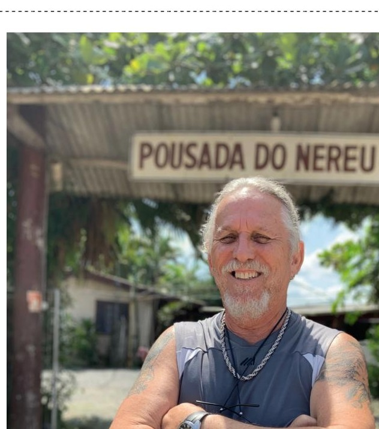

Conheça a Pousada do Nereu
A Pousada
História, pessoas, paisagens e a biodiversidade que fazem parte de um lugar marcado pela pesca do robalo e pela hospitalidade familiar.

Sobre a Pousada
Conheça a história, a estrutura e os números da Pousada do Nereu.
Conhecer →
Sobre Nós
Conheça um pouco mais sobre os proprietários.
Conhecer →Galeria
Veja áreas, rio, marina e momentos de pesca.
Explorar →Fauna
Descubra os peixes e a biodiversidade ligados ao Ecossistema Babitonga.
Explorar →